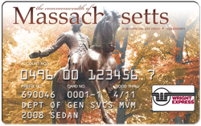

|
Fueling State Vehicles

To use the pumps for fueling a Campus Vehicle, you will need:
Fuel ID InfoYour fuel ID is the Last Six Digits of your Campus/SPIRE ID. If you need help identifying where your Campus/SPIRE ID is located on your UCard, click here. Directions to the On-Campus Fueling StationThe fuel pumps are located in the northwest corner of the campus within the Bus Garage compound at 255 Holdsworth Way. Click here for a map. Fueling Off-CampusWright Express cards can be used by approved fuelers to purchase fuel off-campus at most major gas stations. Off-campus pumps will require the same Driver ID as on-campus. Note that gas stations may occasionally refer to your Driver ID as a "PIN". To locate a convenient gas station click here. For Fueling Information and HelpPlease contact Transportation Services at (413) 545-4682 during normal business hours, or Wright Express at (800) 842-0071 after hours. Temporary Fuel CardsTemporary fuel cards can be loaned to departments who occasionally need to fuel rental vehicles. Please contact Transportation Services at (413) 545-4682 for more information. Monthly BillingTransportation Services will provide each department with a monthly notification of pending recharges for fuel and vehicle repairs. This notification will be sent by email. Departments will have a minimum of four business days to notify Transportation Services of any changes before recharges are processed. Recharges for fuel purchases will post to account (object) code 754400 and recharges for vehicle repairs will post to account (object) code 768900. |
|
This page is maintained by Umass Transit Services. 
|